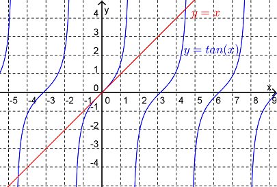
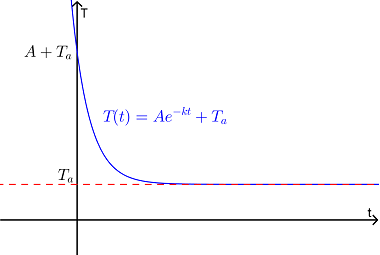
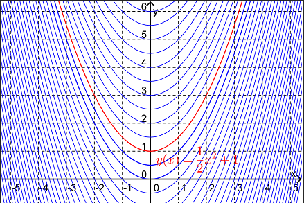
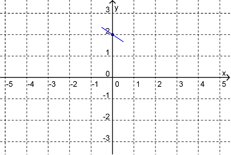
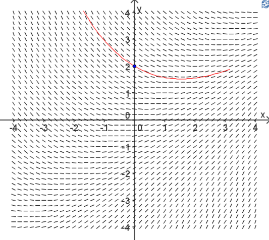
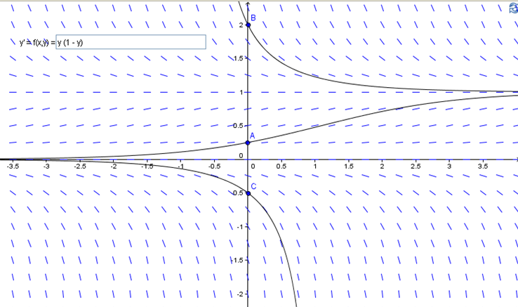

\begin{align*}
x^2(x-1)-2(x-1) \amp =0\\
(x^2-2)(x-1)\amp =0\\
x \amp =1,\sqrt{2},-\sqrt{2}
\end{align*}
Thus we have found the numbers that satisfy the conditions imposed by the equation. Notice that we can check our answers by substituting back into the original equation. For example, when \(x=1\text{,}\)
By way of terminology, we would say that \(x=1\) is a solution to the equation whereas the set of all solutions is \(x=1,\sqrt{2},-\sqrt{2}\text{.}\) An equivalent terminology (which we will use subsequently) is \(x=1\) is a particular solution whereas \(x=1,\sqrt{2},-\sqrt{2}\) is the general solution for this equation.
The strategy that we used for solving the equation in Example 9.1 won’t work for this equation. In fact we cannot write down the solution (or solutions) to this equation in closed form. Thus we adopt the strategy of finding an approximation to the solutions.
We could do this geometrically by plotting the graphs of \(y=x\) and \(y=\tan(x)\) and looking at the points of intersection.

Figure9.3. As can be seen in Figure 9.3, there will be an infinite number of solutions to this equation. One solution is \(x=0\text{.}\) There is another solution between \(x=4\) and \(x=5\) and so on.
Another way of approximating the solution would be numerically. We could use Newton’s method for example. Starting with an initial guess of \(x_0=4.5\) our next guess is
Mathematical models in science and engineering often throw up a situation where information about a function’s derivative (or derivatives) is known. From here, we usually want to deduce information about the function itself.
Example9.4.
It has been observed that an object cools at a rate proportional to the difference between the object’s temperature and ambient temperature. Write down an equation that conveys this observation.
As illustrated in Example 9.4, we were able to write the information known about the situation in terms of an equation involving the function and the derivative of the function even though we didn’t know what the actual function was. Such an equation is called a differential equation (DE). Having determined the differential equation, we now want to find a function that satisfies the equation, i.e. we want to find a solution to the DE.
Example9.5.(Example 9.4 cont.).
Assuming that the ambient temperature is fixed, what can we say happens to the temperature of the body over time?
where \(A\) is an arbitrary constant. Even though we haven’t yet looked at the method for finding this solution we can check that it is correct by substituting back into the original equation. Here
Once we know the function itself we can now answer questions concerning the temperature of the cooling body over time. For example we see that over time, the temperature of the body starts out at \(A+T_a\) and falls exponentially toward \(T_a\text{.}\) See Figure 9.6.

Figure9.6.
Example9.7.
A population of bacteria reproduces at a rate proportional to the population. If the population of bacteria is \(N_0\) at the beginning of the study, predict the behaviour of this population over time.
where \(k\) is some positive constant. Thus, even though we don’t know what the actual function, \(N(t)\text{,}\) is we have written a differential equation that the function must satisfy. Note that we also know that the function must satisfy \(N(0)=N_0\text{.}\)
Example9.8.
An object is dropped from a hot air balloon above the surface of the earth. Assuming that the only forces acting on the object are gravity (acting down) and air resistance (acting up) determine the velocity of the object as a function of time.
Let \(v(t)\) be the velocity of the object at time \(t\) seconds after it was dropped and let the downward direction be the positive direction. Now, Newton’s second law of motion says that the acceleration, \(a\text{,}\) of a body and the net force, \(F\text{,}\) acting on that body are related according to
\begin{equation*}
F=ma
\end{equation*}
where \(m\) is the mass of the body. Also we know that
\begin{equation*}
a=\frac{dv}{dt}
\end{equation*}
The net force on the free falling object will be
\begin{equation*}
F=F_G+F_R
\end{equation*}
where \(F_G=mg\) is the force due to gravity (\(g\) is gravitational constant) and \(F_R\) is the force due to the air resistance. Assuming that \(F_R\) is proportional to the square of the speed of the object, we have \(F_R=-kv^2\text{,}\) where the (positive) constant of proportionality \(k\) will depend on the shape of the object (amongst other things). Thus, from Newton’s second law, the function \(v(t)\) satisfies
This is a differential equation involving the (as yet unknown) function \(v(t)\text{.}\)
As these examples illustrate, differential equations can be used to model real world systems. In these models the differential equation captures the interaction of the quantities in the system. The solution to the differential equation describes the behaviour of the system.
In this strand of Math1120 we are going to look at techniques for finding solutions to differential equations. There is no one technique that will solve all differential equations and there are differential equations for which we can only approximate solutions. However, the methods that have been developed usually work for a particular type or class of differential equation. Thus it is important to be able to classify our differential equations into these various classes. We will learn how to do this as we go along. As a first step in this direction we need some basic definitions and terminology.
Definition9.9.
An equation that involves an unknown function, \(y=y(x)\text{,}\) derivatives of that function and the independent variable \(x\) is called a differential equation (DE).
The order of a DE is the order of the highest derivative that appears in the equation.
A particular solution for the DE is a function \(y=y(x)\) that satisfies the equation.
The general solution of the DE is a description of all possible solutions.
Example9.10.
What is the order of each the following of the DEs? Using your knowledge of the basic functions of science and engineering try to guess a solution to each DE.
Because this equation only involves the first derivative of the function it is a first order differential equation. Next, since the differential equation is of the form
we can solve it by simple anti-differentiation. Thus
\begin{equation*}
y(x)=\int x \hspace{2mm} dx =\frac{1}{2}x^2+C
\end{equation*}
Note that this solution is the general solution to the DE, it is a description of all possible solutions to the equation. As shown in Figure 9.11, when we graph all of the functions in this general solution they fill the entire plane but there are no points of intersection.

Figure9.11. A solution with a given value of \(C\) would be a particular solution of the DE, for example
This particular solution is highlighted in Figure 9.11.
Again this is a first order DE since the highest derivative in the equation is a first derivative. In this case we can’t solve the equation via anti-differentiation. However, given that the equation says that the function must be such that its derivative must be equal to the negative of itself it would be reasonable to guess that the function must be an exponential function. For \(y(x)=e^x\) we can see that
\begin{equation*}
y'=e^x=y
\end{equation*}
and so try instead \(y(x)=e^{-x}\text{.}\) Then
\begin{equation*}
y'=-e^{-x}=-y
\end{equation*}
and so we have found a (particular) solution.
This DE contains a second derivative and hence is of order 2. Again we can find a solution by simple anti-differentiation. Since
This is the general solution to the DE. Notice that this 2nd order DE has two arbitrary constants in its general solution.
This DE is also a 2nd order DE but we can’t get the solution by anti-differentiation. Thus (at this stage) we have to try to guess. What function is the negative of its second derivative? We could try an exponential function (as we did in part \((b)\)), i.e.
\begin{equation*}
y(x)=e^{-x}
\end{equation*}
Then \(y''=e^{-x}=y\) which isn’t quite what we wanted. Another possible candidate would be the sine or cosine function. So let us now try
\begin{equation*}
y(x)=\sin(x)
\end{equation*}
Then \(y''=-\sin(x)=-y\) which is what we wanted and so we have found a solution.
This DE contains both the first and second derivative. However since the highest derivative is the second derivative this equation is a 2nd order DE. The most obvious candidate for a solution to this DE would be an exponential function so let’s try
\begin{equation*}
y(x)=e^{2x}
\end{equation*}
In this case \(y'=2e^{2x}\) and \(y''=4e^{2x}\) and hence \(y''-2y'=0\text{.}\) Thus we have found one solution to the DE.
In general a differential equation will have infinitely many solutions. These solutions take the form of a family of functions containing some arbitrary constants. In practical problems, we usually want to select one function out of this infinite family of functions. We do this by specifying additional data, often in the form of initial values for the function and, if appropriate, its derivatives. We call such a problem an initial-value problem.
Example9.12.
The differential equation \(y'=-y\) has the general solution
To solve the initial-value problem we have to find the value of \(A\) that ensures that the solution satisfies the initial condition. Now if \(y(0)=5\) then
So far, the only methods that we have seen for actually solving a DE are anti-differentiation and guess and check. Clearly, these methods are very limited in their scope. Before looking at some methods for finding solutions to DEs in closed form, we will look at two methods by which we can approximate solutions to first order DEs, i.e. to DEs of the form
\begin{equation*}
y'=f(x,y)
\end{equation*}
Section9.2.1Direction Fields
The first method that we will look at aims to "draw" the solutions to the DE. If \(y(x)\) is the solution to the DE that passes through the point \((x_0,y_0)\) then the slope of the tangent to \(y(x)\) at \((x_0,y_0)\) is \(f(x_0,y_0)\text{.}\) So if we draw a small line segment passing through the point \((x_0,y_0)\) with slope \(f(x_0,y_0)\) (i.e. a small part of the tangent line) this will approximate the graph of the solution at this point. A plot showing these small line segments for many points is called a direction field for the DE.
Example9.13.
Sketch the direction field for the DE
\begin{equation*}
3y'+y=x
\end{equation*}
Use this direction field to sketch the graph of the solution to the DE satisfying the initial condition \(y(0)=2\text{.}\)
So draw a small segment of the line passing through the point \((0,2)\) with slope \(-\frac{2}{3}\text{,}\) as shown in Figure 9.14.

Figure9.14. Repeating for many points \((x,y)\) in the plane gives the direction field for the DE shown in Figure 9.15.

Figure9.15. Notice that from this direction field we can see the general shape of the family of solutions to the DE. We can also sketch any particular solution that we want. The particular solution satisfying \(y(0)=2\) has been constructed in Figure 9.15.
\begin{equation*}
y(x)=0 \textrm{ and } y(x)=1
\end{equation*}
are solutions and that for these solutions \(y'=0\text{.}\) (These solutions are called steady state solutions since \(y\) does not vary along these solutions). Notice also that at any point whose \(y\) coordinate is greater than \(1\text{,}\)\(y'\lt 0\text{.}\) Similarly for those points with \(y\) coordinate satisfying \(0\lt y\lt 1\text{,}\)\(y'>0\) and for those points with \(y\) coordinate satisfying \(y\lt 0\text{,}\)\(y'\lt 0\text{.}\) These observations allow us to very quickly make a sketch of the direction field. The direction field for this DE is shown in Figure 9.17.
From the direction field we can see that the behaviour of the solution for large values of \(x\) depends on the initial condition that the solution satisfies. If \(y(0)\lt 0\) then \(y\rightarrow -\infty\) as \(x\rightarrow\infty\) whereas if \(y(0)>0\) then \(y\rightarrow 1\) as \(x\rightarrow\infty\text{.}\)

Figure9.17.
Section9.2.2Euler’s Method
The second method that we will look at aims to approximate the solution to the initial-value problem
numerically (i.e to produce a table of values for the function). Given a point \((x_n,y_n)\) on the graph of the solution \(y(x)\text{,}\) Euler’s method approximates the next point \((x_{n+1},y_{n+1})\) on the graph of \(y(x)\) using the linear approximation
\begin{equation*}
\Delta y=f(x_n,y_n)\Delta x
\end{equation*}
Thus if \(x_{n+1}=x_n+\Delta x\text{,}\) where \(\Delta x\) is small, then
\begin{equation*}
y_{n+1}=y_n+f(x_n,y_n)\Delta x
\end{equation*}
Definition9.18.Euler’s Method (for solving the initial-value problem \(y'=f(x,y), \hspace{5mm} y(x_0)=y_0\)).
Choose a step size \(\Delta x\)
Begin at the point \((x_0,y_0)\)
Move from one point \((x_0,y_0)\) on the solution to the next point \((x_{n+1},y_{n+1})\) on the solution by:
\begin{align*}
x_{n+1} \amp =x_n+\Delta x\\
y_{n+1} \amp =y_n+f(x_n,y_n)\Delta x
\end{align*}
Note that the accuracy of Euler’s method will depend on both the step size used and the distance from the initial known point on the solution.
With \(\Delta x=0.25\) we will need 4 iterations to reach \(x=1\text{.}\) We can conveniently summarise the calculations via a table
Table9.20.
\(n\)
\(x_n\)
\(y_n\)
\(f(x_n,y_n)\)
\(f(x_n,y_n)\Delta x\)
\(0\)
\(0\)
\(1\)
\(1\)
\(0.25\)
\(1\)
\(0.25\)
\(1.25\)
\(1.25\)
\(0.3125\)
\(2\)
\(0.5\)
\(1.5625\)
\(1.5625\)
\(0.390625\)
\(3\)
\(0.75\)
\(1.953125\)
\(1.953125\)
\(0.48828125\)
\(4\)
\(1\)
\(2.44140625\)
\(\)
Thus the Euler estimate is \(y(1)=2.4414 \textrm{ (to 4 d.p.)}\)
Note that the exact solution to this initial-value problem is \(y=e^x\) and hence \(y(1)=e=2.7183\) (to 4 d.p.). Figure 9.21 shows how the Euler solution with \(\Delta x=0.5\) compares with the exact solution.